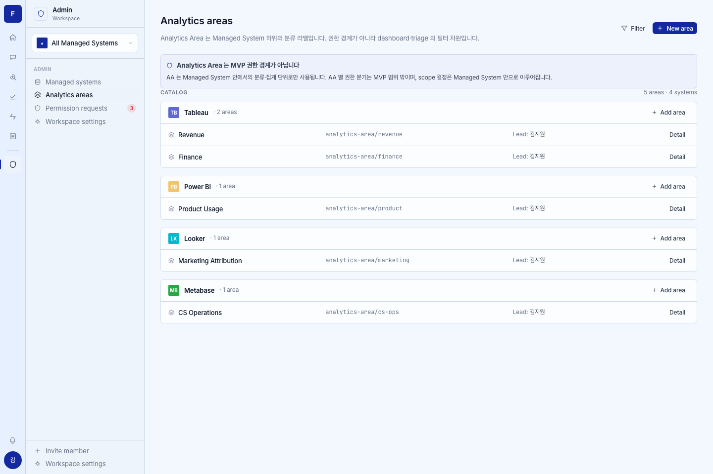
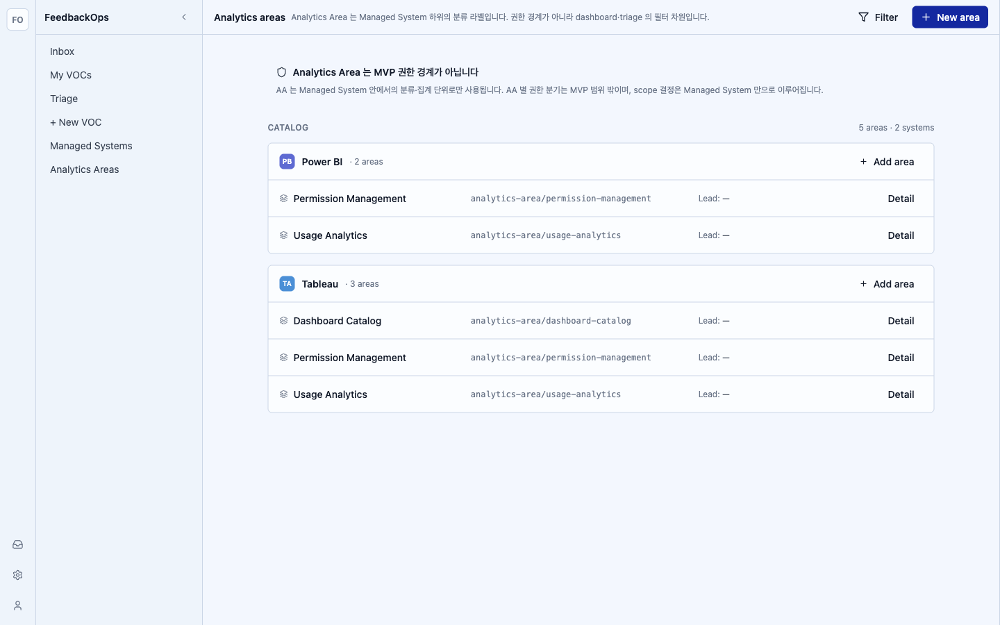
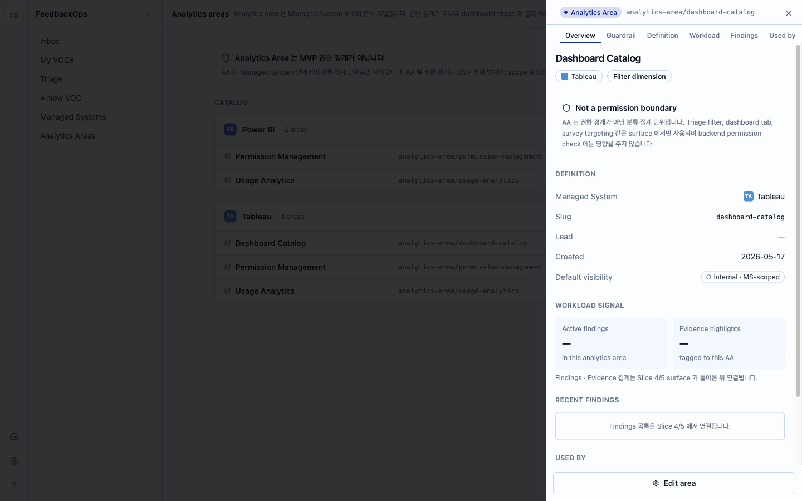

Boot: backend :3011 (running) + Postgres (seeded) + vite :3010; auth via
POST /auth/mock-login {external_id:"mock-admin-1"}. Captured at viewport 1440.
Baseline: docs/design-prototype/screenshots/final-baselines/admin-analytics-areas.png.
Result: HIGH = 0 MEDIUM = 2 (both data-shape, defer-with-issue) LOW = 3



| Region | Category | Prototype | Impl | Severity | Resolution |
|---|---|---|---|---|---|
| header.title | copy | Analytics areas | Analytics areas | — | match |
| header.subtitle | copy | "Analytics Area 는 Managed System 하위의 분류 라벨입니다…" | verbatim | — | match |
| header.actions | chrome | Filter (subtle) + New area (primary) | Filter + New area | — | match |
| guardrail.callout | copy | blue Callout "Analytics Area 는 MVP 권한 경계가 아닙니다" | verbatim, tone=blue, shield icon | — | match |
| catalog.section-title | copy | CATALOG · "{n} areas · {n} systems" | CATALOG · "5 areas · 2 systems" | — | match |
| group.header | hierarchy | scope-mark + MS name + "· {n} areas" + Add area | same (scope-mark via shared helper) | — | match |
| row.layout | hierarchy | 4-col: layers+name | mono slug | Lead: {name} | Detail | same 4-col grid | — | match |
| row.lead-cell | data-shape | Lead: 김지원 (hard-coded user u-1) | Lead: — (DTO has owner_team_id only; seed has none → resolves to —) | MEDIUM | defer-with-issue (no per-AA lead field in AnalyticsAreaDto; #88 DATA-SHAPE RULE; render team name when present) |
| group.set / row data | data-shape | 4 systems (Tableau/Power BI/Looker/Metabase), areas Revenue/Finance/… | 2 systems (Power BI/Tableau) from live seed, slugs permission-management/usage-analytics/dashboard-catalog | MEDIUM | defer-with-issue (seed dataset ≠ prototype synthetic data; live data is authoritative per AGENTS.md) |
| nav.sidebar | chrome | Admin workspace switcher + Admin section (Managed systems/Analytics areas/Permission requests/Workspace settings) | app shell nav (Inbox/My VOCs/Triage/New VOC/Managed Systems/Analytics Areas) | LOW | intentional — global shell is shared/out-of-scope for this route issue |
| group.order | spacing | Tableau first | Power BI first (server list order) | LOW | merge OK — order follows live managed-systems list; not specified |
| row.empty-state | spacing | n/a (every group populated in baseline) | "등록된 Analytics Area 가 없습니다." styled empty per group when 0 areas | LOW | match (verbatim copy; spec MED satisfied) |
| slideover.width | chrome | 460px right drawer, backdrop blur + rise | 460px @fops/ui Sheet (right), overlay + slide-in | — | match |
| slideover.section-nav | hierarchy | Overview/Guardrail/Definition/Workload/Findings/Used by | all 6 sections present | — | match |
| slideover.definition | data-shape | Managed System / Slug / Lead / Created / Default visibility | MS pill+mark / live slug / Lead (team or —) / live created_at / "Internal · MS-scoped" | — | match (live data) |
| slideover.workload+findings | data-shape | Active findings / Evidence highlights counts; recent findings list | "—" placeholders + defer note "Slice 4/5 surface 가 들어온 뒤 연결됩니다" | — | defer-with-issue (locked decision — Findings/Evidence not built; no invented counts) |
| slideover.footer | interaction-affordance | "Edit area" (secondary, block) | "Edit area" → opens edit form (reuse #87 edit pattern) | — | match |
0 HIGH, 0 copy mismatches. The 2 MEDIUM are both data-shape (live data vs prototype synthetic data — authoritative per AGENTS.md "live data only") and carry defer-with-issue resolutions, not token/spacing drift in critical regions. ≤2 MEDIUM (non-critical) + 3 LOW → merge OK with note.